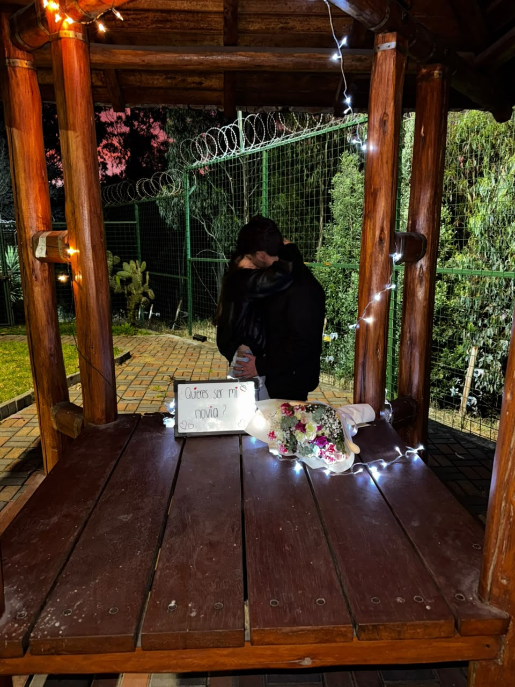
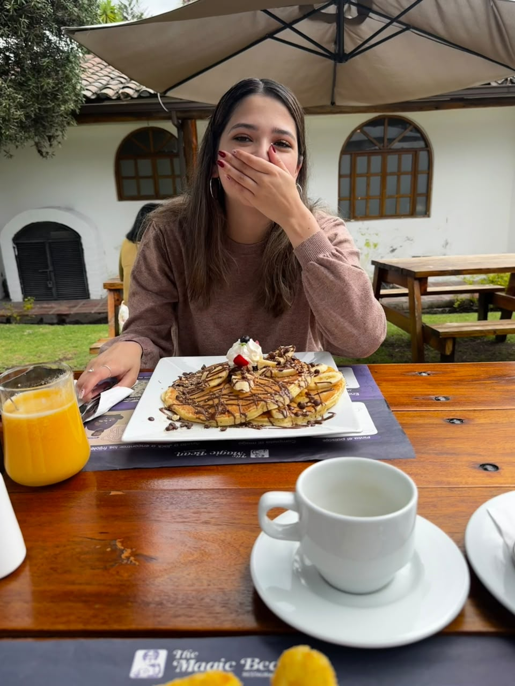
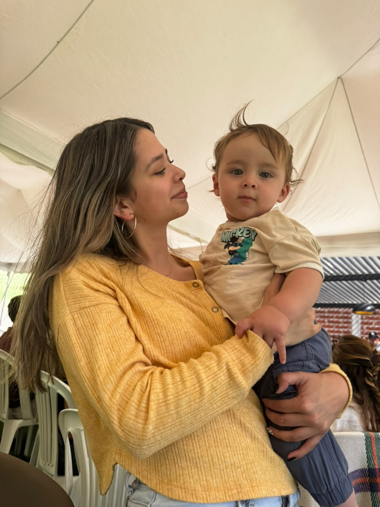

Desde que te conozco, me siento el hombre más afortunado de este planeta.
No sé qué hice bien en esta vida, pero algo hice, porque me tocaste tú.
Hay gente que llega a tu vida y la ordena sin pedir permiso. Tú llegaste y todo empezó a tener sentido.
Si tuviera que explicar la suerte, contaría el día que te conocí y no haría falta decir nada más.
lo que hemos vivido
Nuestra historia
24 de octubre de 2021
El primer beso
Un cumpleaños de diecisiete, la casa llena de gente y de ruido, y sonando
La Gozadera de Gente de Zona 🎵. Todos bailaban, pero yo solo te veía a ti.
En algún punto de esa canción el mundo bajó el volumen, se me olvidó el paso,
me acerqué y te besé. Nunca voy a poder escuchar esa canción sin volver ahí.
3 de julio de 2022
Nuestra primera cita
Nos encontramos en El Condado para ver Minions 2. Llegaste
con tu mamá y yo casi me muero ahí mismo: los nervios que traía se me
multiplicaron por diez en dos segundos. Después nos sentamos en la sala y
se me pasó todo, porque me reí más viéndote reír a ti que con la película.
Ese día entendí que contigo hasta lo más simple se vuelve un buen recuerdo.
22 de julio de 2022
El día que te pedí ser mía
Le pusimos nombre a lo que ya sentíamos. Dejamos de ser dos personas
que se gustaban para ser nosotros. Fue el día en que dejé de imaginarte
en mi futuro y empecé a construirlo contigo.
21 de marzo · nuestra fecha
El día que volvimos
Después del tiempo lejos, de las cosas que dolieron y de todo lo que
tuvimos que aprender por separado, volviste. Y no volvimos a lo mismo:
volvimos mejor, más seguros, sabiendo por fin lo que teníamos.
Por eso el 21 es nuestro número y cada mes lo celebro como si fuera el primero.
Veintiuno de marzo,
para siempre mi calendario;
porque volviste, y contigo
volvió lo necesario.
Fuiste mi primer amor, y resulta que también vas a ser el único que me importe de verdad.
Entre esa fiesta de 2021 y este día se metieron kilómetros, silencios y meses enteros
en los que no supe nada de ti; y ninguno de ellos alcanzó.
Ni la distancia ni el tiempo pudieron con esto. Lo intentaron los dos y perdieron los dos.
Porque yo siempre te amé, incluso cuando no podía decírtelo;
te amo hoy, con todo lo que sé de ti y lo que me falta por descubrir;
y te voy a amar siempre.
y son solo algunas
Razones por las que te amo
UnoPor tu risa. Esa que se te escapa y te tapas la boca como si fuera un secreto. Es lo más lindo que he visto.
DosPorque contigo no tengo que fingir estar bien. Puedo llegar hecho pedazos y sigues ahí.
TresPor cómo te emocionas con cosas chiquitas: un desayuno bonito, una canción, un plan tonto de un martes.
CuatroPor lo terca que eres cuando tienes razón. Y por lo linda que te pones cuando no la tienes y lo sabes.
CincoPor cómo cuidas a la gente que quieres. Verte con niños me desarma.
SeisPorque me haces querer ser mejor sin pedírmelo nunca. Solo por el ejemplo.
SietePor las conversaciones que se hacen larguísimas y ninguno de los dos quiere colgar.
OchoPorque volviste. Sabiendo todo lo difícil que había sido, igual volviste. Eso vale más que mil promesas.
NuevePor cómo hueles, por cómo te ríes de tus propios chistes, por mil detalles tuyos que no sabría explicar.
DiezPorque cuando estoy contigo no quiero estar en ningún otro lado. Eso, para mí, es estar en casa.
Y esas son solo unas cuantas de las cosas que me vuelven loco de ti.
Porque si me pusiera a enumerarlas todas no me alcanzaría esta página,
ni el día, ni las palabras. Tendría que ir sumando una por cada gesto tuyo
que descubro, y tú sigues dándome motivos nuevos todos los días.
Así que lo dejo en diez, y me guardo el resto para írtelos contando
el resto de mi vida.
lo dijeron mejor que yo
Poemas
«Quiero hacer contigo
lo que la primavera hace con los cerezos.»
Pablo Neruda
Poema 14 · fragmento
Volverán las oscuras golondrinas
en tu balcón sus nidos a colgar,
y otra vez con el ala a sus cristales
jugando llamarán;
pero aquellas que el vuelo refrenaban
tu hermosura y mi dicha al contemplar,
aquellas que aprendieron nuestros nombres…
ésas… ¡no volverán!
Volverán las tupidas madreselvas
de tu jardín las tapias a escalar,
y otra vez a la tarde, aun más hermosas,
sus flores se abrirán;
pero aquellas cuajadas de rocío,
cuyas gotas mirábamos temblar
y caer, como lágrimas del día…
ésas… ¡no volverán!
Volverán del amor en tus oídos
las palabras ardientes a sonar;
tu corazón, de su profundo sueño
tal vez despertará;
pero mudo y absorto y de rodillas,
como se adora a Dios ante su altar,
como yo te he querido…, desengáñate:
¡así no te querrán!
Gustavo Adolfo Bécquer
Rima LIII · completa
Por el sueño y el aire, por el agua y la luz,
¿cuántos años tendría que quererte
para acabar de conocerte?
Jaime Sabines
fragmento
pruebas de que fue real
Momentos

La noche del cartelito y los nerviosEsa risa que me desarma

Desayunar contigo, mi plan favorito

Y aquí me imaginé toda una vida
antes de cerrar
Para ti
Kamila,
Cuatro meses suenan a poco escritos así, pero tú y yo sabemos todo lo que
hubo que caminar para llegar a contarlos. Cada 21 es mi manera de decirte
que no lo doy por sentado.
Gracias por volver. Gracias por quedarte los días en que soy insoportable,
por reírte de mis tonterías, por hacerme sentir que tengo dónde llegar.
No sé cuántos meses más voy a poder escribirte, pero pienso escribirlos todos.
Te amo. Hoy más que ayer y bastante menos que mañana.
Tuyo, siempre
21 de julio
«Si el amor fuera un lugar, yo ya tendría tu nombre en la dirección.»